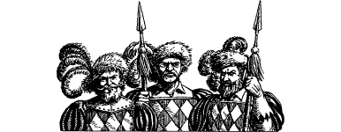

105
The journey to Helgor takes you south to the City-state of Casiorn, and then west to the Lyrisian capital of Varetta—a road you once travelled several years ago during your Magnakai quest. In the main, your ride is peaceably uneventful. By choice you keep to yourself and avoid staying too long in any one place. It is not until you reach Vakovar that the uncertain politics of this region give cause for concern. This squalid, lawless city is home to some of the Stornlands’ most notorious criminals and robber-barons. It is common knowledge that travellers who value their wealth and health wisely avoid Vakovar whenever possible. Forewarned by these rumours you choose not to dwell here, but ride swiftly through the city and press on to Helgor. Yet while you are within the city walls of Vakovar no less than a dozen separate attempts are made to relieve you of your money pouch and horse. There are no witnesses to these attacks, which is just as well, for when you ride out of Vakovar you leave a score of dead robbers littering the cobblestones.
It is early evening when you eventually crest a hill and catch your first disappointing glimpse of Helgor. It is a damp and unwholesome-looking city, ringed by a rampart of mouldering rubble, the remains of a curtain wall which was destroyed during the war against the Darklords. Through the many gaps in this rampart you can see the thick fog that swirls through Helgor’s brick streets and crooked, filthy alleys. At first sight it seems that the Magadorian capital is little more than a beggar-city, a vast hotchpotch of slums and hovels, but as you ride nearer you notice several grand towers piercing the rolling grey mist.
{kind=link}

The main approach to Helgor is patrolled by presidential guards, heavily armed with crossbows and spears, who are checking everyone attempting to enter by road. They are dressed in flamboyant tunics of green, scarlet, and black calf hide, which seem too lavish for the garrison of such a squalid city. When asked your business, you show them the scroll given to you by Rimoah. They are impressed by the invitation and insist that an armed escort be provided to take you directly to the President’s palace. After your experience at Vakovar you welcome their offer.
Despite the overwhelming squalor of Helgor’s dingy tenements and streets, you were expecting the President’s palace to be the exception. To your disappointment, it turns out to be little more than a fortified chateau situated at the centre of the city, atop a hill known as the Vanagrom Knoll. You are welcomed into the palace’s senate hall by an official called Stepona, a dour man who looks older than his thirty years. He sees to it that your horse is stabled, and that you are given refreshments while you await your audience with the President. An hour passes before the doors to the senate hall swing open and, without formal announcement, in strides President Kadharian of Magador.
If you have ever visited the city of Aarnak in a previous Lone Wolf adventure, turn to 315.
If you have never been to Aarnak, turn to 202.